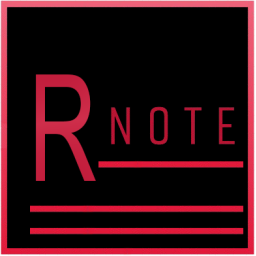
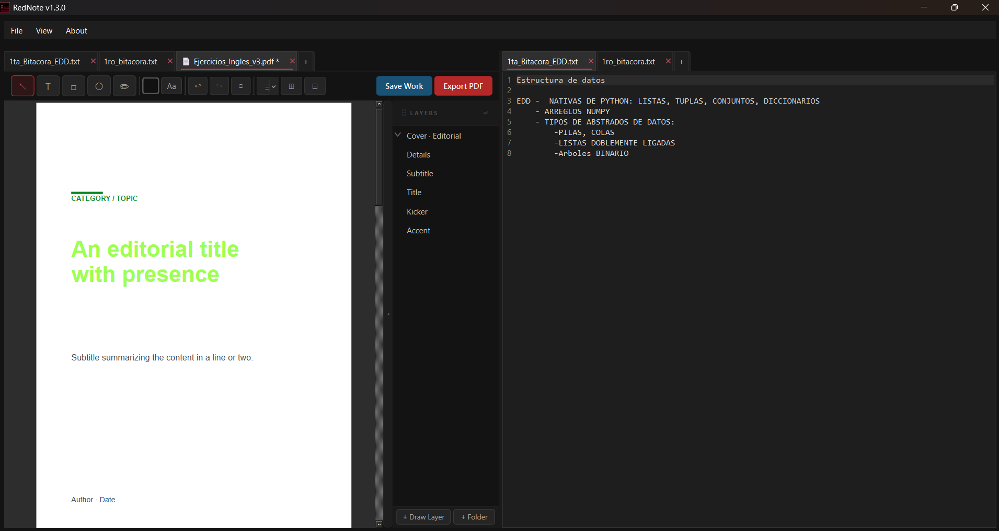
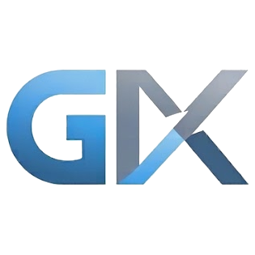
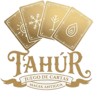
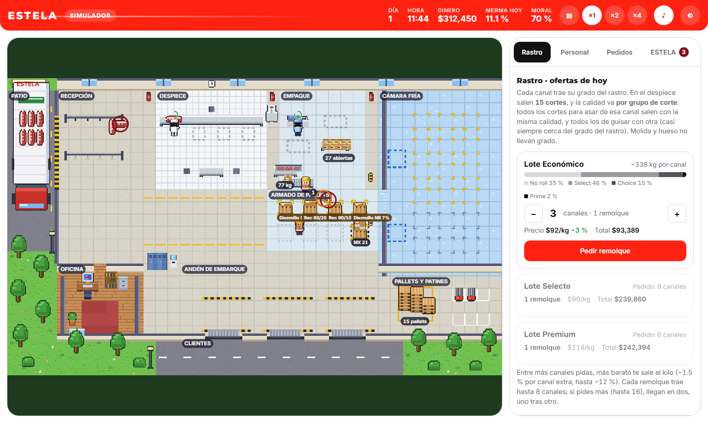
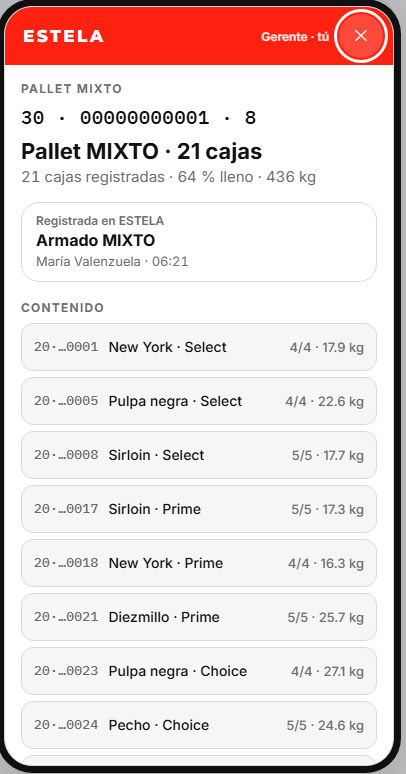

Portafolio · Aplicaciones Web
Matrícula: 25311013 · Grupo: DSM 4-1
Soy un profesional de perfil técnico con una formación multidisciplinaria en manufactura industrial e ingeniería de software.
Sobre mí
Soy Samuel Balderrama, estudiante de la TSU en Desarrollo de Software Multiplataforma en la Universidad Tecnológica de Hermosillo. Actualmente me desempeño como Encargado de TI y Desarrollo de Software en AISCOR Ingenieros S.A. de C.V., donde administro la infraestructura de TI, desarrollo software interno —como GIX, una plataforma tipo ERP construida a la medida de la empresa— y colaboro en la documentación del Sistema de Gestión Integral bajo las normas ISO 9001:2015, 14001:2015 y 45001:2018.
Stack
Proyectos

Semi-IDE gratuito de uso escolar. Reúne en una sola ventana un editor de código, un bloc de notas y un editor de PDF por capas, pensado para trabajar en paralelo con Visual Studio Code o similar. Resuelve el problema de anotar lo importante durante clase sin que la información se pierda entre archivos sueltos.

Proyecto profesional

ERP modular para empresas de obra civil, en construcción por etapas. Hoy están en uso los módulos del Sistema de Gestión Integral (SGI) y el control de vehículos, maquinaria, diésel y consumibles.
Proyecto personal

En desarrolloJuego de cartas multijugador en el navegador. Todo el arte, desde las cartas y sus marcos hasta el sello mágico del menú, se genera por código, sin imágenes.
Versión en desarrollo alojada en Render (plan gratuito): la primera carga puede tardar hasta un minuto.
Proyecto personal
Software de inventario y trazabilidad para plantas de carne. Cada bolsa, caja y pallet lleva un código único: con un escaneo se sabe dónde está, en qué estado, qué historia tiene y quién es su responsable, de la canal al embarque.


Simulador jugable: dirige un complejo cárnico, pide canales al rastro, despieza, empaca, guarda en frío y surte pedidos. Tu gente no es perfecta: usa el lector de Estela para investigar lo que quedó abandonado.
Prototipos de diseño alojados en Render (plan gratuito): la primera carga puede tardar hasta un minuto.
Evidencia por unidad
Cada enlace lleva a la versión pública que entregué al cerrar esa Unidad, sobre el mismo proyecto.
Unidad 1
Portafolio estático (HTML + Tailwind)
practica2-blsa.onrender.comUnidad 2
App Django + MySQL en Render
[URL-UNIDAD-2]Unidad 3
CRUD dinámico con login y sesiones
[URL-UNIDAD-3]Unidad 4
Proyecto integrador final
[URL-UNIDAD-4]Contacto